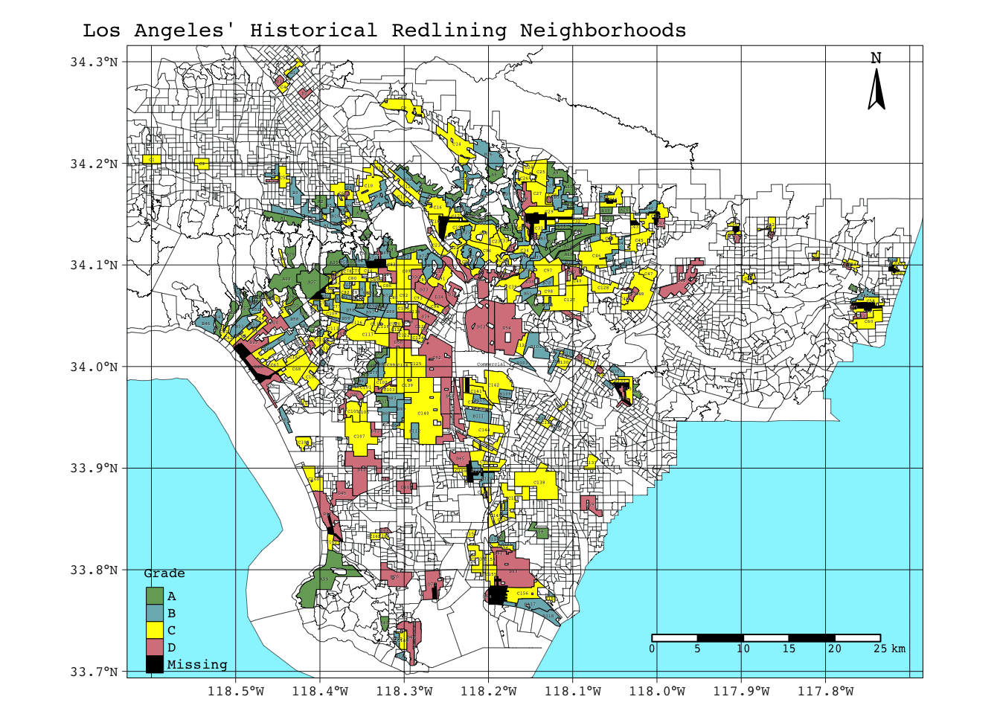
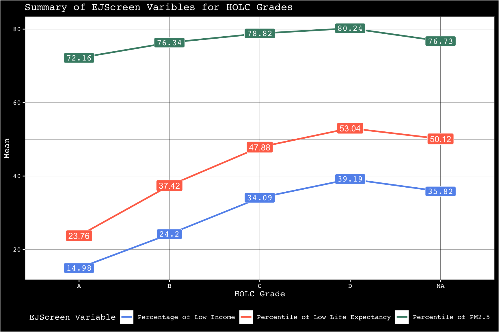
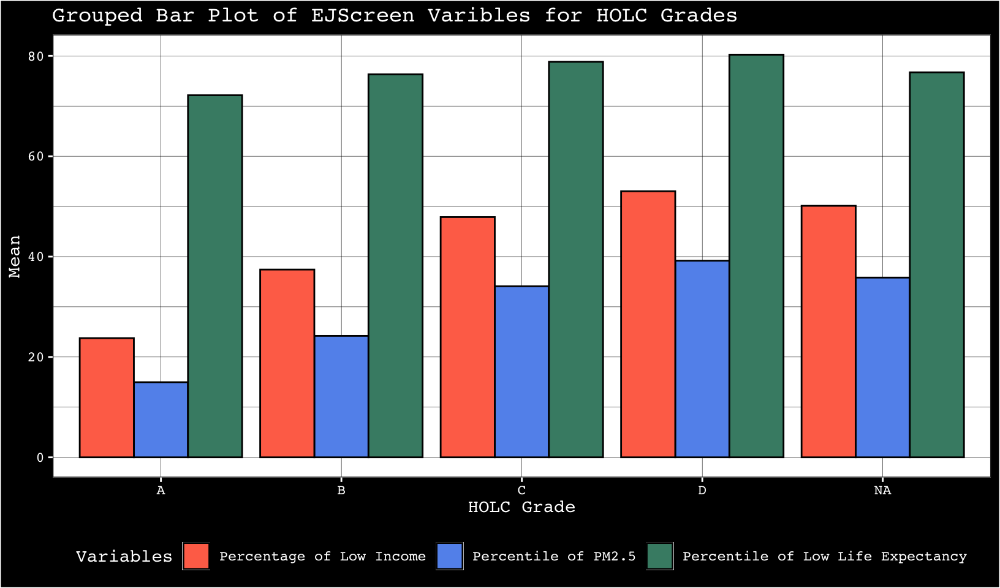
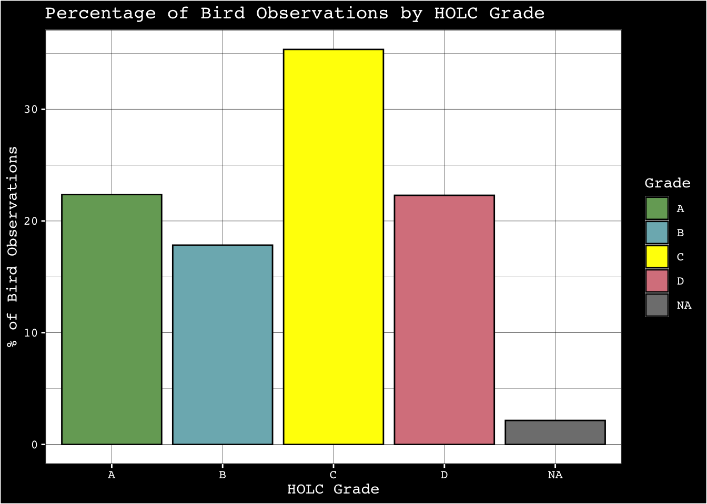

library(sf)
library(here)
library(RColorBrewer)
library(tmap)
library(st)
library(tidyverse)
library(knitr)
library(kableExtra)
library(ggplot2)Patterns of Environmental Injustice:
EJ Conditions in Historical Redlined Neighborhoods in LA
Part 1: Legacy of redlining in current environmental (in)justice
Load libraries
Load data
ejscreen <- st_read(here::here("data","ejscreen","EJSCREEN_2023_BG_StatePct_with_AS_CNMI_GU_VI.gdb"))birds_LA <- read_sf(here::here("data","gbif-birds-LA", "gbif-birds-LA.shp"))redline <- read_sf(here::here("data","mapping-inequality/mapping-inequality-los-angeles.json")) %>% st_make_valid()Make map of historical redlining neighborhoods (including neiborhoods colored by HOCL grade and appropriate base map)
los_angeles <- ejscreen %>%
dplyr::filter(CNTY_NAME == "Los Angeles County")if(st_crs(redline) == st_crs(los_angeles)){ # set warning to check crs' match
print("crs match")
} else {
warning("crs do not match!")
}los_angeles <- st_transform(los_angeles, crs = st_crs(redline)) # transform crs of los_angeles to redline's crsif(st_crs(los_angeles) == st_crs(redline)){ # set warning to check crs' match after transforming
print("crs match")
} else {
warning("crs do not match!")
}[1] "crs match"tmap_options(check.and.fix = TRUE)
tmap_mode = "plot"
hist_redline <- tm_shape(los_angeles,
bbox = redline) +
tm_polygons(col ="white",
lwd = 0.3,
border.col = "black") +
tm_shape(redline) +
tm_polygons(col = "grade",
palette = c("#76a865", # when setting "col = "fill" for the column "fill",
"#7cb5bd", # could not create legend, used "unique(redline$fill)"
"#ffff00", # to get colors from "fill" column instead
"#d9838d"),
colorNA = "#000000",
lwd = 0.5,
border.col = "black",
title = "Grade") +
tm_text("label",
size = 0.2,
col = "black",
bg.alpha = 0.5,
shadow = TRUE)+
tm_layout(fontfamily = "courier",
main.title = "Los Angeles' Historical Redlining Neighborhoods",
main.title.size = 0.90,
bg.color = "#98F5FF",
legend.title.size = 0.7,
legend.text.size = 0.6,
legend.position = c("left","BOTTOM")) +
tm_compass(type = "arrow",
position = c("right","TOP"),
size = 1.75) +
tm_scale_bar(size = 0.5) +
tm_graticules(col = "black",
lwd = 0.45)
tmap_save(hist_redline, here("hist_redline.png"))
print(hist_redline)
Summarize % of current census groups within each HOLC grade
LA_subset<- los_angeles[redline, ]
LA_holc <- st_join(redline, LA_subset)
blocks_per_grade <- LA_holc %>%
st_drop_geometry() %>%
group_by(grade) %>%
summarize(census_block_group_count = n()) %>%
mutate(percentage_per_grade =
census_block_group_count/
sum(census_block_group_count, na.rm = TRUE)*100) %>% # remove NAs
kable(col.names = c("HOLC Grade","Census Block Group Count","% Per Grade"),
align = "c") %>%
kable_styling(bootstrap_options = "bordered",
html_font = "courier") %>%
column_spec(1:3,
background = c("#76a865",
"#7cb5bd",
"#ffff00","#d9838d",
"#000000")) %>%
row_spec(5, color = "white")
print(blocks_per_grade) # table was not rendering correctly, fixed by setting chunk option results = 'asis'| HOLC Grade | Census Block Group Count | % Per Grade |
|---|---|---|
| A | 449 | 7.028804 |
| B | 1239 | 19.395742 |
| C | 3058 | 47.871008 |
| D | 1346 | 21.070758 |
| NA | 296 | 4.633688 |
Calculate mean for EJScreen variables within HOLC grades
Mean income
# variable = % of low income
lowincome_pct_mean <- LA_holc %>%
st_drop_geometry() %>%
group_by(grade) %>%
summarize(lowincome_mean = (mean(LOWINCPCT, na.rm = TRUE)*100)) # remove NAs to prevent error in mean function
lowincome_pct_mean %>% # create simple table to show results instead of just code output
kable(col.names = c("Grade","% of Low Income"),
align = "c") %>%
kable_styling(bootstrap_options = "bordered",
html_font = "courier") %>%
column_spec(1:2,
background = c("#76a865",
"#7cb5bd",
"#ffff00","#d9838d",
"#000000")) %>%
row_spec(5, color = "white")%>%
print()| Grade | % of Low Income |
|---|---|
| A | 14.97511 |
| B | 24.20119 |
| C | 34.08981 |
| D | 39.19059 |
| NA | 35.81823 |
Mean PM2.5
# variable = percentile for particulate matter 2.5
pm2.5_percentile_mean <- LA_holc %>%
st_drop_geometry() %>%
group_by(grade) %>%
summarize(pm2.5_mean = mean(P_PM25, na.rm = TRUE)) # remove NAs to prevent error in mean function
pm2.5_percentile_mean %>% # create simple table to show results instead of just code output
kable(col.names = c("Grade","Percentile For Particulate Matter 2.5"),
align = "c") %>%
kable_styling(bootstrap_options = "bordered",
html_font = "courier") %>%
column_spec(1:2,
background = c("#76a865",
"#7cb5bd",
"#ffff00","#d9838d",
"#000000")) %>%
row_spec(5, color = "white")%>%
print()| Grade | Percentile For Particulate Matter 2.5 |
|---|---|
| A | 72.16036 |
| B | 76.33898 |
| C | 78.81884 |
| D | 80.23700 |
| NA | 76.72973 |
Mean low life expectancy
# variable = percentile for low life expectancy
low_life_expect_percentile_mean <- LA_holc %>%
st_drop_geometry() %>%
group_by(grade) %>%
summarise(low_life_expect_mean= mean(P_LIFEEXPPCT, na.rm = TRUE)) # remove NAs to prevent error in mean function
low_life_expect_percentile_mean %>% # create simple table to show results instead of just code output
kable(col.names = c("Grade","Percentile For Low life Expectancy "),
align = "c") %>%
kable_styling(bootstrap_options = "bordered",
html_font = "courier") %>%
column_spec(1:2,
background = c("#76a865",
"#7cb5bd",
"#ffff00","#d9838d",
"#000000")) %>%
row_spec(5, color = "white")%>%
print()| Grade | Percentile For Low life Expectancy |
|---|---|
| A | 23.75982 |
| B | 37.42025 |
| C | 47.88017 |
| D | 53.03621 |
| NA | 50.12409 |
all_means <- low_life_expect_percentile_mean %>% # make table with all results
mutate(pm2.5_percentile_mean = pm2.5_percentile_mean$pm2.5_mean,
lowincome_pct_mean = lowincome_pct_mean$lowincome_mean)Make figures to summarize EJScreen variables within HOLC grades
variables_plot <- ggplot(all_means, aes(x = grade)) +
geom_line(aes(y = lowincome_pct_mean,
color = "Percentage of Low Income"),
group = 1,
lwd = 1) +
geom_label(aes(x = grade, y = lowincome_pct_mean,
label = round(lowincome_pct_mean,
digits = 2)),
fill = "cornflowerblue",
color ="white",
family = "courier") +
geom_line(aes(y = pm2.5_percentile_mean,
color = "Percentile of PM2.5"),
lwd = 1,
group = 1) +
geom_label(aes(x = grade, y = pm2.5_percentile_mean,
label = round(pm2.5_percentile_mean, digits = 2)),
fill = "aquamarine4",
color ="white",
family = "courier") +
geom_line(aes(y = low_life_expect_mean,
color = "Percentile of Low Life Expectancy"),
lwd = 1,
group = 1) +
geom_label(aes(x = grade,
y = low_life_expect_mean,
label = round(low_life_expect_mean, digits = 2)),
fill = "coral1",
color ="white") +
labs(title = "Summary of EJScreen Varibles for HOLC Grades",
y = "Mean",
x = "HOLC Grade",
colour = "EJScreen Variable") +
theme_bw() +
theme(panel.grid.major = element_line("black",0.1),
panel.grid.minor = element_line("black",0.1),
axis.text = element_text(color = "white"),
axis.ticks = element_line(color = "white"),
legend.background = element_rect(fill = "black"),
text = element_text(family = "courier",color = "white"),
plot.background = element_rect(fill = "black"),
legend.position = "bottom") +
scale_color_manual(values = c("Percentage of Low Income" = "cornflowerblue",
"Percentile of PM2.5" = "aquamarine4",
"Percentile of Low Life Expectancy" = "coral1"))
print(variables_plot)
#change shape of df to make it easier to use data in all_means for plotting purposes
# my approach for the first fig was difficult and pivot_longer should help!
long_means <- all_means %>%
pivot_longer(cols = c(lowincome_pct_mean, pm2.5_percentile_mean, low_life_expect_mean),
names_to = "Variable",
values_to = "Mean")
# Create grouped bar plot
ggplot(long_means, aes(x = grade,
y = Mean,
fill = Variable)) +
geom_bar(stat = "identity", # represents values in data instead of counting occurrences
position = "dodge",
color = "black") + # Use position = "dodge" for grouped bars
labs(title = "Grouped Bar Plot of EJScreen Varibles for HOLC Grades",
x = "HOLC Grade",
y = "Mean",
fill = "Variables") +
theme_bw() +
theme(panel.grid.major = element_line("black",0.1),
panel.grid.minor = element_line("black",0.1),
axis.text = element_text(color = "white"),
axis.ticks = element_line(color = "white"),
legend.background = element_rect(fill = "black"),
text = element_text(family = "courier",color = "white"),
plot.background = element_rect(fill = "black"),
legend.position = "bottom") + # to avoid legend squeezing plot
scale_fill_manual(values = c("lowincome_pct_mean" = "cornflowerblue",
"pm2.5_percentile_mean" = "aquamarine4",
"low_life_expect_mean" = "coral1"),
labels = c("Percentage of Low Income","Percentile of PM2.5",
"Percentile of Low Life Expectancy")) # change legend labels to show units (percentile and %)
Reflection on HOLC grade figs:
The figures show a to-be-expected trend in the mean for each variable within each HOLC grade: the “higher” the grade, the better the EJScreen conditions. For example, for grade A, the “most desirable” of the grades in redlining, the means of all the variables we looked at are lower than for any other HOLC grade. The % of low income people is lower, the percentile of particulate matter 2.5 is lower, and same for low life expectancy. The effects of historical redlining in Los Angeles have have carried over into the present and now manifest as environmental injustices. For the lowest HOLC grade (D) the mean % of low income people is just over 80%! We know that low income folks are often also people of color, and that people of color have been marginalized at almost every level of society. It is not surprising that this part of the population within redlined neighborhoods is currently experiencing high levels of PM 2.5 and low life expectancies.
Part 2: Legacy of redlining in biodiversity observations
if(st_crs(birds_LA) == st_crs(redline)){ # set warning to check crs' match
print("crs match")
} else {
warning("crs do not match!")
}[1] "crs match"Summarize % of current census groups within each HOLC grade
# subset first to bird obs within redline grades
birds_subset <- birds_LA[redline, ]
# join bird subset to redline df
redline_birds <- st_join(redline, birds_subset)percent_birds <- redline_birds %>%
st_drop_geometry() %>%
group_by(grade) %>%
summarize(birds_count = n()) %>%
mutate(birds_percentage_per_grade =
birds_count/
sum(birds_count, na.rm = TRUE)*100)
birds_table <- percent_birds %>%
kable(col.names = c("HOLC Grade","Bird Observation Count","% of Bird Observations Per Grade"),
align = "c") %>%
kable_styling(bootstrap_options = "bordered",
html_font = "courier") %>%
column_spec(1:3,
background = c("#76a865",
"#7cb5bd",
"#ffff00","#d9838d",
"#000000")) %>%
row_spec(5, color = "white")
print(birds_table)# table was not rendering correctly, fixed by setting chunk option results = 'asis'| HOLC Grade | Bird Observation Count | % of Bird Observations Per Grade |
|---|---|---|
| A | 30346 | 22.365531 |
| B | 24201 | 17.836559 |
| C | 47978 | 35.360623 |
| D | 30253 | 22.296989 |
| NA | 2904 | 2.140299 |
Make figure to summarize Bird Observations Within HOLC grades
percentage_bird_plot <-
ggplot(percent_birds,aes(x = grade,
y = birds_percentage_per_grade,
fill = grade)) +
geom_bar(stat = "identity",
color = "black") +
labs(title = "Percentage of Bird Observations by HOLC Grade",
x = "HOLC Grade",
y = "% of Bird Observations") +
scale_fill_manual(values = c("#76a865", "#7cb5bd", "#ffff00", "#d9838d", "#000000")) +
labs(title = "Percentage of Bird Observations by HOLC Grade",
x = "HOLC Grade",
y = "% of Bird Observations",
fill = "Grade") +
theme_bw() +
theme(panel.grid.major = element_line("black",0.1),
panel.grid.minor = element_line("black",0.1),
axis.text = element_text(color = "white"),
axis.ticks = element_line(color = "white"),
legend.background = element_rect(fill = "black"),
text = element_text(family = "courier",
color = "white"),
plot.background = element_rect(fill = "black"))
print(percentage_bird_plot)
Reflection on Bird Observations By HOLC Grade
The figure and the data does not show any clear correlation between HOLC grade and the number or percentage of bird observations. In reference to Ellis-Soto and co-authors’ findings, we would have to see a similar trend as the one we saw for EJScreen variables vs HOLC grades: the higher the grade/ better the grade the more bird observations. In the figure above we see that grade A does not have the highest % of bird obs. In fact, it is grade C that has the highest percentage. Historical redlining does not seem to have an effect on the undersampling of bird observations. Overall, our results do not match those of Ellis-Soto and co-authors.
Data Citations
Mapping Inequality Project EJScreen Environmental Justice Screening and Mapping Tools Global Biodiversity Information